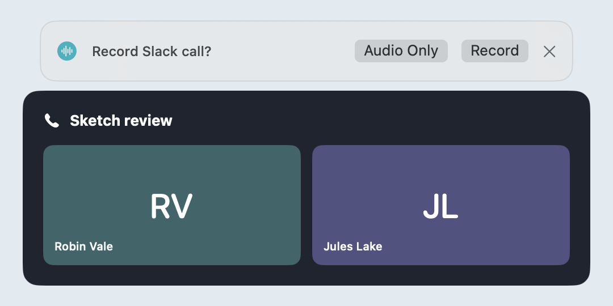
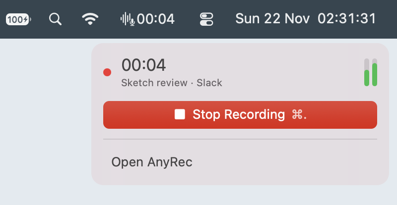

The recording
Video, call audio, and your microphone combined into one playable file.
AnyRec records your calls on Mac and hands you back what you actually wanted: a playable recording, a transcript you can revisit, and optional AI summaries.
Video, call audio, and your microphone combined into one playable file.
Timestamped speech, with optional speaker recognition for voices you’ve named.
Optional AI summaries: what was agreed, and who’s doing what next.
With call reminders enabled, AnyRec looks for call apps using the microphone. For supported Slack and Teams windows, a reminder can start recording that window directly. Other notifications open the window picker.
You start the recording. Detecting activity doesn’t start it for you.

No virtual audio driver or aggregate device to configure. First launch guides you through Screen Recording, Microphone, Accessibility, and Notifications permissions. Processing tools and local models may need downloads.
Pick a window or display, including a call running in a browser.
The menu bar shows elapsed recording time. Open the recording panel to see call-audio and microphone levels, and stop the recording when you’re finished.

For supported Slack and Teams mute controls, Accessibility helps AnyRec track when the call is listening. Detected muted intervals are silenced in the combined video and mixed audio used for transcription.
The original microphone file is retained unchanged and can contain speech while muted. If mute tracking is unavailable—or you transcribe a single raw track—don’t rely on this exclusion.
When both audio tracks are present, AnyRec measures their levels before combining them. If it detects call audio leaking into the microphone, it lowers the microphone while the call audio plays.
That can also lower your voice if you talk over someone. Headphones give the clearest separation; this is not a guarantee of echo-free audio.
When the captured window closes, recording stops and saves. If you hang up but the window stays open, stop manually. Closing a call window does not end a display recording.
After stopping, you can dismiss the saved panel and start another recording while earlier work continues in the background.
Enable speaker recognition and download its model to separate voices and match them to people you’ve named. Open “People in this call” to see who spoke. AnyRec asks one question at a time when a name needs checking. You can choose a person or leave them under “Not sure who”.
Names and speaking turns can need correction. Recognition helps identify a voice; it doesn’t guarantee every short utterance belongs to the right person.
With an available AI provider, AnyRec can generate an overview, decisions, and action items. Items with a timestamp let you play from that moment; checkboxes let you mark them done.
Automatic summaries default to on when a provider is available. Turn off “Summarize after transcribing” in Settings if you want to keep transcript text away from a cloud provider. LLM transcript review is a separate opt-in.

Parakeet supports 25 languages. The bundled Whisper engine lists 100, including Romanian and English. Both process audio on your Mac after their models are downloaded. Apple transcription requires macOS 26 and a supported locale.
Automatic chooses an available enabled local engine; it does not first check whether Parakeet supports the call’s language. Choose an appropriate engine yourself for languages outside Parakeet’s list.
Turn on parallel transcription and select multiple engines to compare results. LLM review is optional and sends transcript text to its provider.

AnyRec keeps the original video and audio tracks alongside the combined recording. Generated transcripts have Markdown, JSON, and SRT subtitle files. You can generate or regenerate a transcript from the app.
The source microphone track is not edited to remove muted speech. Review the files you choose to share.
The library shows recordings that are still processing. Starting another recording doesn’t require waiting for the previous transcript or summary to finish.
Recording, local transcription, and local voice matching run on your Mac. OpenAI transcription sends audio to OpenAI. Summaries and LLM review send transcript text to their configured provider.
For a local-only workflow, use a local transcription engine, turn off automatic summaries, and leave LLM review off. Provider subscriptions or API charges are separate from AnyRec.
Let everyone on the call know you’re recording. Keep in mind that retained source tracks may include microphone audio excluded from the combined file.
For macOS 15.2 and later.
View releasesLocal engines are optional downloads. Cloud AI uses your own provider.